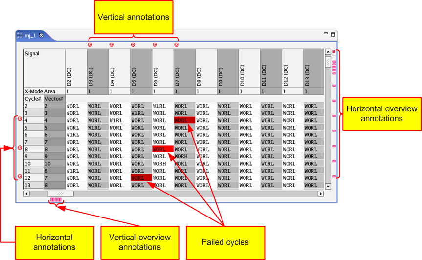

Displaying failure data
If your testflow did not execute successfully, you can use the Pattern Editor to analyze which cycle has failed at which signal (pin or pin group).
About this task
This topic describes the use of the Pattern Editor as a result analysis tool. You can debug the pattern, perform the test again and check the results.
When working with multiport patterns, the procedure below does not apply. In this case you use the Multiport Burst Editor. For details see the "To display fail information and ports synchronized in timeline" section in Working with sync groups.
Before you begin
To see test results, you must execute the test first.
Procedure
-
In the Pattern Explorer click the
 icon. The pattern which was executed during your test is highlighted.
icon. The pattern which was executed during your test is highlighted.
-
Click the
 icon. The Pattern Editor expands the pattern.
icon. The Pattern Editor expands the pattern.

- Failed cycles are highlighted in red.
- Rows with failed cycles are highlighted with horizontal annotations.
- Columns with failed cycles are highlighted with vertical annotations.
For easy navigation within large patterns you can use the horizontal and vertical overview annotations:
- Hover the cursor over an annotation without clicking it, to get a tooltip showing the location of the error.
- Click an annotation, to focus the Pattern Editor on the error area.
If more than one error occurred:
- Overview annotations: Click an overview annotation once, to jump to the first error indicated by this overview annotation. Consecutive clicks cycle through all errors indicated by this overview annotation. Horizontal overview annotations cycle through the errors located in one row. Vertical overview annotations cycle through the errors located in one column.
- Annotations: Click an annotation, to jump to the first error indicated by this annotation.
- The refresh result display button
 can be used when Displaying failure data in expanded mode, see Collapsed and expanded mode. If you have acquired a large number of failures, the number of
annotations is limited. When you mark a line in Pattern Editor, you can generate the
annotations around the marked line by pressing this button.
can be used when Displaying failure data in expanded mode, see Collapsed and expanded mode. If you have acquired a large number of failures, the number of
annotations is limited. When you mark a line in Pattern Editor, you can generate the
annotations around the marked line by pressing this button.